Grensten
Grobkörniger, hellgrauer Granit mit zahlreichem roten Korn
Höhe: 143 cm
Größte Breite: 116 cm
Dicke ca.: 43 cm
Runenhöhe: 14/15/20 cm
Runeninschrift :
Toki Schmied errichtete diesen Stein zum Andenken an Rifli, den Sohn des Æsgir, Biorns Sohn. Gott helfe seiner Seele.
51 - Grensten - Letztes Update 10.09.2025
Listennummer : DR 91 / DK MJy 11
| Navidaten: 56.42082 9.92417 oder: Byvej 2, 8870 Langå |
Transliteration: : tuki : smiþr : risþ : | : stin : þisi : aiftiR : | : Rifla : sun : askis : bianaR | : sunaR : kuþ : hiab : þaRa : salu :
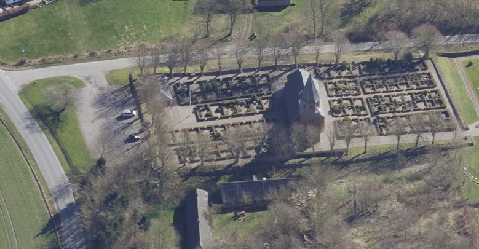
Das ist ein Luftfoto vom 02.04.2023 von Skråfoto - Lizenz: CC BY 4.0 - das die Kirche von Grensten zeigt. Skråfoto ist eine Webanwendung, die von Klimadatastyrelsen weltweit kostenlos bereitgestellt wird. Die Aufnahmen werden seit 2017 alle zwei Jahre erneuert und neben einer Senkrechtaufnahme wird ein Schrägbild aus jeder Himmelsrichtung angeboten, das man über eine Adresssuche aufrufen kann.
Im Oktober 1842 fand sich der Runenstein unter dem erneuerten Fußboden im Waffenhaus der Grensten Kirche, von dem er abgedeckt worden war, wieder. Er wurde aus dem Boden hervorgeholt und an der Kirchhofeinfriedung abgelegt. 1899 wurde er im Freien in einer Ecke zwischen Kirchturm und Kirchenschiff, an der südlichen Seite der Kirche auf einem Zementsockel aufgestellt. Dort stand er bis 1982, seither befindet er sich im Waffenhaus der Kirche.
Toki Schmied errichtete auch den Runenstein von Hørning, der sich heute im Moesgård Museum befindet. Toki war vermutlich ein guter Christ und ein tüchtiger Schmied. Der Grensten Stein wurde wahrscheinlich im Zeitraum 970-1020 errichtet. Die Inschrift verläuft in der sogenannten Parallelordnung. Die fünf senkrechten Runenbänder werden alle von unten nach oben gelesen. Die Inschrift beginnt in der linken Linie und setzt sich nach rechts fort. Die Inschrift schließt mit einer schön geschwungenen Spiralornamentik ab.
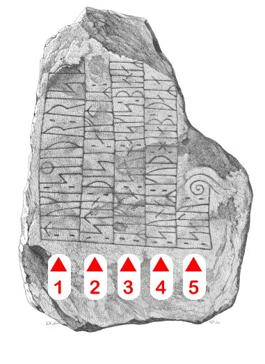
Bildquelle: Zeichnung von Magnus Petersen 1877 - Leserichtung von mir visualisiertDie Inschriftanordnung bei den Runenbändern mit einer gemeinsamen unteren Basislinie kennt man auch von anderen Runensteinen in dieser Region (z.B. Langå 3, Borup, Øster Bjerregrav_2 und Vester Tørslev).
Der Runenstein war aber schon lange vor seiner Wiederentdeckung bekannt. Die erste Erwähnung findet sich bereits 1627 durch Jon Skonvig (*1600 - 1664, Pfarrer und der Runenzeichner für Ole Worm), der auch diese Zeichnung anfertigte. Zu der Zeit lag der Stein außerhalb der Kirchentür von Grensten.
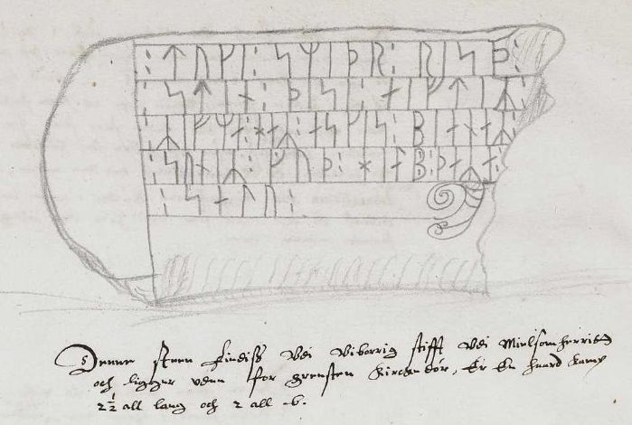
Skizze von Jon Skonvig von 1627 - Quelle: AM 367 fol. - Lizenz: Public Domain
Jon Skonvig Text: "Denne steen Findiss Vdi Viborrig stifft Vdi Mielsomherritt och ligger vden for Grensten Kirckedør, Er En haard Kamp 2 ½ all lang och 2 all b.".
Übersetzung: "Dieser Stein findet sich im Bistum Viborg in der Harde Middelsom und liegt vor der Kirchentür von Grensten. Es ist ein Felsbrocken von 2 ½ Ellen Länge und einer Breite von 2 Ellen (Anm.: 1 Elle = 62,77 cm)".
Die Zeichnung misst im Original 13,5 cm.
Die Aufzeichnungen - sechs Handschriften - von Jon Skonvig haben sich in der sogenannten "Arnamagnæanske samling, A.M. 366-371 fol." (zu deutsch: Arnamagnäanische Sammlung) erhalten.
Über diesen Link kann die entsprechende originale Seite 15v der AM 367 fol., die diese Runensteinzeichnung und die dazu von Jon Skonvig angefertigten Aufzeichnungen auf der Webseite "www.handrit.is" eingesehen werden.

Am Mittwoch, 28.09.2022, war ich in der Universität Kopenhagen in der Arnamagnæanske Samling und durfte das Original - AM 367 fol. - in Händen halten und eingehend fotografieren. Man bat mich aber von einer Veröffentlichung meiner Fotos abzusehen und stattdessen auf die digitalisierte Handschrift über www.handrit.is zu verweisen.
In der zweibändigen Dissertation von Erik Moltke (*04.04.1901 - 19.10.1984, Runologe, Historiker)
 Bildquelle: Scan von Buchumschlag "Runerne i Danmark og ders
oprindelse" - Erik Moltke - 1976 - Lizenz:
CC-BY-SA
Bildquelle: Scan von Buchumschlag "Runerne i Danmark og ders
oprindelse" - Erik Moltke - 1976 - Lizenz:
CC-BY-SA
mit dem Titel "Jon Skonvig og de andre runetegnere. Et bidrag til runologiens historie i Danmark og Norge I-II, 1956-58" finden sich im Band 1 von 1956 - S. 76/77 - diese drei Abbildungen - Zeichnung Jon Skonvig / Metallschnitt Worm / Foto Moltke - zu dem Runenstein.
Diese Zeichnung nutzte Ole Worm (*13.05.1588 - 31.08.1654, Arzt, Universalgelehrter und der Begründer der Runologie) als Vorlage für einen Metallschnitt in seinem Werk "Danicorum Monumentorum Libri Sex" von 1643, (Seite 314).
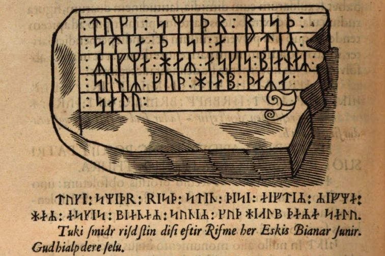
Dieser o.a. Screenshot findet sich in einer digitalisierten Ausgabe im Internet über die Bayerische Staatsbibliothek / MDZ Münchener DigitalisierungsZentrum Digitale Bibliothek - urn:nbn:de:bvb:12-bsb10800415-0 - abgerufen 11.01.2023.
Der Runenstein sollte aufgrund einer königlichen Verfügung vom 9.2.1652 nach Kopenhagen versandt werden (siehe: Nordisk Tidsskrift for Oldkyndighed, Band 1, 1832, S. 326) - "...Frands Povisk til Halds Lehn; Grensted - Stenen ...". Dieser Anweisung kam man in Randers, wie andernorts auch, jedoch nicht nach. Seitens Kopenhagen wurde nicht nachgehakt, da dort 1654 die Pest ausbrach, was auch Ole Worm noch im gleichen Jahr den Tod brachte.
Die nächste Erwähnung des Runensteins findet sich bei Johannes Meier (1660, Lehrer und Verfasser) in seinem Werk Liber monumentorum Danicorum, qvi monumenta Danica Olai Wormii partim emendat partim locupletat (pdf-Datei anhand eigener Fotos von mir erstellt) von 1654 (Blatt 22r) - Königlichen Bibliothek in Kopenhagen - GKS 2371 kvart


Handschrift auf Papier - 47 Blatt, Blatt 1 und 47 unbeschrieben , aus dem 18. Jahrhundert, vormals Nr. 2794 in Niels Foss (*06.08.1670 - 17.03.1751) Sammlung - siehe S. 223 in "Bibliotheca Fossiana sive Catalogus librorum tam editorum quam manuscriptorum, ad philologiam et antiquitates, inprimis vero ad historiam patriæ pertinentium, maximam partem, nitidissime et, quam vocant, ligatura Anglica compactorum, quos, dum vixit, collegit Nicolaus Fossius de Juellund [15/2, 1752]". Die Handschrift hat diese Maße: H: ca. 23,5 cm / B: ca. 19 cm / D: ca. 1,5 cm. Sie hat einen schönen Ledereinband mit Golddruck und verwendet stärkeres und helleres Papier als NKS 799. Die Jahreszahl von "1654" auf dem Titelblatt (S. 2) soll von Erich Christian Werlauff (*02.07.1781 - 05.06.1871, dänischer Historiker - link-LIVES)
 Bildquelle:
Wikipedia - Lizenz:
Public Domain
Bildquelle:
Wikipedia - Lizenz:
Public Domain
hinzugefügt worden sein. Text und Zeichnungen der Handschrift - auch im Zusammenspiel - sind ansehnlicher ausgeführt als in NKS 799.
In der Königlichen Bibliothek in Kopenhagen hat sich von Johannes Meier aber auch noch eine zweite Handschrift erhalten - NKS 799 kvart - Joh. Mejeri Monumenta Runica in Dania (pdf-Datei anhand eigener Fotos von mir erstellt). Deren Entstehungsdatum ist nicht bekannt. Der Runenstein findet sich auf Blatt 21.


Handschrift auf Papier - 44 Blatt, Blatt 41-44 unbeschrieben, aus dem 18. Jahrhundert, vormals Nr. 70 in der Manuskript Sammlung von Peder Frederik Suhm (*18.10.1728 - 07.09.1798)
 Bildquelle:
Wikipedia - Lizenz:
Public Domain
Bildquelle:
Wikipedia - Lizenz:
Public Domain
Es handelt sich um
ein Büchlein mit einfachem Pappeinband, der Buchrücken ist aus
Leder und
verstärkte Ecken aus Leder weist der Buchdeckel auf. Es hat die
Maße: H: ca. 20
cm / B: ca. 17 cm / D: ca. 1,5 cm. Zu den einzelnen Zeichnungen im Büchlein
wurde ein einfacher Maßstab abgebildet.
Bei beiden Exemplaren
weist immer das rechte Blatt der Doppelseite in der oberen Ecke eine mit
Bleistift geschriebene Seitenzahl auf. Diese beiden Werke sind Abschriften von
früheren Werken, die die Zeit nicht überdauert haben.
Vielleicht sind sie in
Kopenhagen beim
Großbrand von 1728
vernichtet worden, als neben zahlreichen privaten Beständen auch ca.
35.000 Bücher der Königlichen Bibliothek
in
Kopenhagen ein Raub der Flammen wurden!
Die
GKS 2371 kvart soll laut
Prof. Ludv. F. A. Wimmer
(*07.02.1839 -
29.04.1920, Philologe und Runenforscher
-
link-LIVES -
Politiets registerblade
-
Bestattungsprotokoll)
 Bildquelle:
Fotografie zw. 1877-1900 von Fotograf Hansen & Weller
-
Det Kgl. Biblioteks billedsamling - Lizenz:
Public Domain
Bildquelle:
Fotografie zw. 1877-1900 von Fotograf Hansen & Weller
-
Det Kgl. Biblioteks billedsamling - Lizenz:
Public Domain
und seinen Infos von Christian Walter Bruun (*10.12.1831 - 28.02.1906, Königlicher Oberbibliothekar - link-LIVES)
 Bildquelle: Fotografie
um 1880 von Fotograf J. Petersen
(*19.03.1829 -
01.02.1905) -
Det Kgl. Biblioteks billedsamling - Lizenz:
Public Domain
Bildquelle: Fotografie
um 1880 von Fotograf J. Petersen
(*19.03.1829 -
01.02.1905) -
Det Kgl. Biblioteks billedsamling - Lizenz:
Public Domain
von
Niels Foss selbst abgeschrieben worden sein. Er hat die Texte laut
den Studien von
Erik Moltke
(*04.04.1901 - 19.10.1984, Runologe, Historiker)
offenbar überarbeitet, verkürzt oder geändert und seine eigene
Orthografie eingebracht (z.B. alt: haffuer - bei Foss: haver / tyck/tyk /
kircke/kirke / oc/og u.a.).
In der
NKS 799 kvart hingegen steht auf der Seite 37 links unten "Niels
Knudsen Jerne" und seine Handschrift lässt vermuten, dass er die
gesamte Abschrift angefertigt hat. Er war offenbar ein professioneller Schreiber
und könnte mit dem Niels Knudsen identisch sein, der
1728 "Skriverkarl" auf dem Holmen (Stadtviertel von
Kopenhagen) war, also ein Mann der schnell viele Texte schreiben und liefern
konnte. Er wurde am 08.11.1737 zum "ekvipageskriver"
ernannt. Es scheint dass er sich entgegen
Niels Foss sehr eng an das Original gehalten hat.
Offenbar gab es laut dem Katalog über die Büchersammlung
von
Peter
Hansen Resens (*17.06.1625 -
01.06.1688)
 Bildquelle:
Wikipedia - Lizenz:
Public Domain
Bildquelle:
Wikipedia - Lizenz:
Public Domain
"Bibliotheca
Regiæ Academiæ Hafniensi donata" Hafniæ (Kopenhagen) von
1685 - siehe
S. 273 - früher noch ein drittes Werk von
Johannes Meier mit dem Titel "Johan. Meieri
liber MS. de Monumentis Runicis sive antiqvis Danicics".
Quelle:
Erik
Moltke -
Jon Skonvig og de andre runetegnere. Et bidrag til runologiens historie i
Danmark og Norge I-II,
1956-58
Band 2 von 1958
-
Kapitel 13
Zwischen Montag, 26.09.2022, und Mittwoch, 28.09.2022, habe ich in der Königliche Bibliothek - Den sorte Diamant - in Kopenhagen - u.a. diese beiden alten Handschriften nach Online-Vorbestellung zur Ansicht erhalten. Ich durfte mir Aufzeichnungen machen, sie aber auch uneingeschränkt fotografieren. Ich habe sie mit dem Smartphone komplett als Doppelseiten fotografiert und daraus jeweils eine pdf-Datei erstellt. Vielleicht hat ja jemand Bedarf an diesen seltenen Ausgaben, die aufgrund ihres Alters keinem Urheberrrecht mehr unterliegen.
Peder Hansen Resen (*17.06.1625 - 01.06.1688, Jurist und Historiker) - Er hat mit dem von ihm über 20 Jahre gesammelten Material das großartige Werk "Atlas Danicus", bestehend aus letztlich 39 Folianten, geschaffen. Nur geringe Teile wurden aber zu seiner Lebzeit gedruckt. Die Bände wurden wenige Jahre nach seinem Tod 1692 an die Königliche Bibliothek Kopenhagen übergeben. Aufbewahrt wurden sie auf dem Dachboden der Trinitatis Kirche. Dort wurden sie fleißig studiert, abgeschrieben und zeitweise ausgeliehen. Leider wurde dann ein Großteil davon beim Kopenhagener Großbrand 1728 zerstört. Es hat sich neben einigen Originalseiten - siehe Arnamagnäanische Sammlung - AM 359 fol. / AM 360 fol. / AM 361 fol. und AM 362 fol. (digitalisiert) - nur eine (verkürzte) Abschrift und außerdem Kupferstiche von etwa 200 Städteansichten aus der Vogelperspektive erhalten. Originale dieser AM 359/360/361 fol sind über die Universität Kopenhagen - Institut for Nordiske Studier og Sprogvidenskab (NorS) - AM 359 fol / AM 360 fol / AM 360 fol (Karten) / AM 361 fol - in sw abrufbar. Eine zweite (verkürzte) Ausgabe war von Vincent Lerche (*04.04.1666 - 28.07.1742, Jurist, Architekt) beauftragt worden, diese wurde aber beim Brand von Schloss Christiansborg im Jahr 1794 vernichtet.
In der Königlichen Bibliothek in Kopenhagen wird seit 1803 in der Sammlung Uldall (186 folio) diese einzige verbliebene Ausgabe, die in den 1750er Jahren durch den Hofbaumeister Laurids de Thurah (*04.03.1706 - 06.09.1759)
 Bildquelle:
Wikimedia - Lizenz:
Public Domain
Bildquelle:
Wikimedia - Lizenz:
Public Domain
aus verstreuten Resten des Atlas Danicus in 7 Bänden rekonstruiert worden war, aufbewahrt:
Wie diesem Titel zu entnehmen ist, gehörte dieses Exemplar vormals Adam Gottlob Graf von Moltke (*10.11.1710 - 25.09.1792, Staatsmann, Diplomat)
 Bildquelle:
Wikimedia - Lizenz:
Public Domain
Bildquelle:
Wikimedia - Lizenz:
Public Domain
Nach dessen Tod erwarb Herman Treschow (*11.12.1739 - 02.05.1797, Professor für Theologie, Pfarrer) diese Ausgabe. Peter Uldall (*29.06.1743 - 11.11.1798, Jurist, Theologe)
 Bildquelle:
Wikimedia - Lizenz:
Public Domain
Bildquelle:
Wikimedia - Lizenz:
Public Domain
wiederum kaufte sie für 170 Rigsdaler (Rigsdaler zu 24 Skilling - damals 1 ½ Mark) nach dessen Ableben. Er hatte aber nicht lange Freude daran, denn er starb ein Jahr später an einem Schlaganfall. Sein Sohn, Justizrat W. A. Uldall, schenkte diese Ausgabe der Kgl. Bibliothek im Jahr 1803, wo dieses großartige Werk noch heute verwahrt wird - Ein Band hat übrigens die stolze Größe H/B/D von 40 cm x 29,5 cm x 9,5 cm.
Im Atlas VI. ist auf der Seite 536 ein Eintrag / Zeichnung vom Runenstein enthalten, die ich am 28.09.2022 vor Ort fotografieren durfte.


Der Abschnitt des Atlas Danicus wurde 1933 von Chr. Behrend von Latein ins Dänische übersetzt und von Gunnar Knudsen als "Peder Hansen Resens Atlas Danicus, VI, B:, Viborg Bisepdømme", herausgegeben.
Meine Übersetzung des dänischen Textes - S. 122- zu dem Runenstein: "Der achte im Ort Grensten vor der Schwingtür der Kirche ist in der Länge 2 ½ Ellen aber in der Breite nur 2 [Zeichnung] Text: Toki Schmied errichtete diesen Stein zum Andenken an Rifli, den Sohn des Eskil Bianer Sohn. Gott helfe seiner Seele".
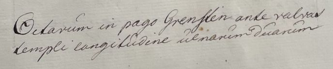
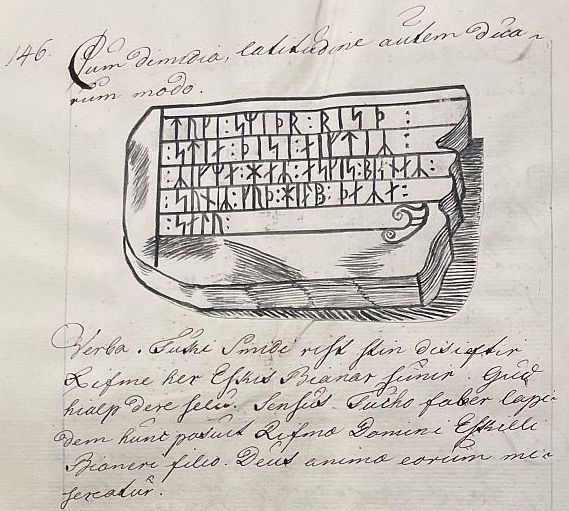
Zu dem Runenstein hat Søren Abildgaard (*18.02.1718 - 02.07.1791, Zeichner, Kupferstecher und Geologe)
 Bildquelle:
Jellingprojektet - Lizenz:
Public Domain -
http://www5.kb.dk/images/billed/2010/okt/billeder/object444188/da/
Bildquelle:
Jellingprojektet - Lizenz:
Public Domain -
http://www5.kb.dk/images/billed/2010/okt/billeder/object444188/da/
im Jahre 1767 in seinen Reiseaufzeichnungen auf Blatt 33r notiert (übersetzt): "...im Fundament des Waffenhauses eingemauert...".
In Erik Pontoppidans (der Jüngere, *03.09.1698 - 20.12.1764)
 Bildquelle:
Wikipedia - Lizenz:
Public Domain
Bildquelle:
Wikipedia - Lizenz:
Public Domain
Werk "Den Danske Atlas" - Tomus IV, Cap. XII, del. 1 - von 1768, S. 657-658, zu "c" (S. 36 "c" in der pdf Datei) führt er eine Legende zu dem Runenstein an: "Außerhalb der Kirchentür befindet sich ein großer Stein mit einer alten, abgenutzten Runeninschrift, die der Überlieferung nach einen Grenzvertrag zwischen zwei Provinz-Königen oder zwischen zwei katholischen Bischöfen von Viborg und Aarhus enthalten muss." Erklärend fügt Pontoppidan hinzu, dass die Grensten Kirche die Grenze zwischen der Viborg und der Aarhus Diozöse bildet.
Der Schnitt des Grensten Runensteins aus Ole Worm Werk wurde wiederum in dem Buch "Lexikon over Adelige Familier i Danmark, Norge og Hertug-dommene I (1787) - S. 348 (rechte untere Ecke) zusammen mit einer Abbildung des Norra Åsum Runensteins (DR 347 / SK 14) wiedergegeben (Links am Rand), weil Ole Worm glaubte in den Runenzeichen "bianaR" den Familiennamen des uralten dänischen Adelsgeschlechts "Banner" zu erkennen - Google Scan.
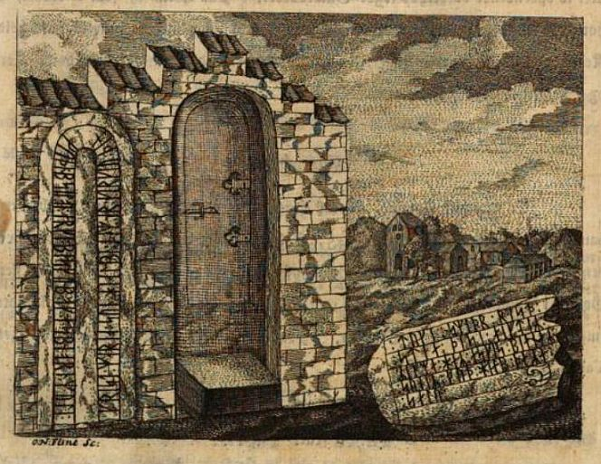
Der Überlieferung nach ist Timme Sjællandsfar, der Knut der Große auf dessen Kriegszug nach England um das Jahr 1000 begleitete, der Vorfahr sowohl der schwedischen Banér Familie als auch der dänischen Familie Banner. Das älteste bestätigte Familienmitglied ist Marschall Erik Nielsen (gestorben 1345) Lehensmann in Aalborghus.
Johan Gustav Liljegren (*27.02.1791 -02.06.1837, schwedischer Nationalarchivar und Archäologe)
 Bildquelle:
Schwedisches Reichsarchiv - Lizenz:
Public Domain
Bildquelle:
Schwedisches Reichsarchiv - Lizenz:
Public Domain
hat den Runenstein in seinem Werk "Run-Urkunder" von 1833 auf der S. 172 mit der Nummer 1513 aufgeführt.
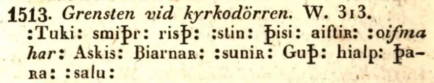
Quelle: Bayerische Staatsbibliothek - urn:nbn:de:bvb:12-bsb10431145-1 - abgerufen am 11.01.2023
Rasmus Henrik Kruse (*07.08.1796 - 30.05.1877, Landschaftsmaler - link-LIVES - Heirat 21.12.1851)
 Bildquelle:
Det Kgl. Biblioteks billedsamling - Lizenz:
Public Domain
Bildquelle:
Det Kgl. Biblioteks billedsamling - Lizenz:
Public Domain
hat über diesen Runenstein in seiner handschriftlichen Abhandlung "Nørre Jyllands Mærkværdigheder i det 19. Aarh. Hs. Bd 1-2 (med) Tillæg 1-2" berichtet. Genaugenommen im Band II, 1848, Zeichnung Nr. 19, S. 44-45.
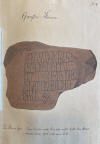 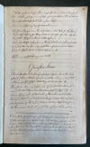 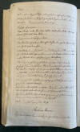


Dieses Kleinod wird heute im Nationalmuseum in Kopenhagen Antikvarisk-Topografisk Arkiv, aufbewahrt. Dort durfte ich am Dienstag, 27.09.2022, zu Gast sein und die vier Bände in Händen halten und fotografieren.
Auf diese Zeichnung von Kruse greift Carl Christian Rafn (*16.01.1795 - 20.10.1864, Altertumsforscher - link LIVES - Bestattungsprotokoll)
 Bildquelle: Zeichner
Magnus Petersen -
Det Kgl. Biblioteks billedsamling - Lizenz:
Public Domain
Bildquelle: Zeichner
Magnus Petersen -
Det Kgl. Biblioteks billedsamling - Lizenz:
Public Domain
in seinem Werk von 1856 "Antiquités de l'Orient, monuments runographiques" auf der Seite 206 zurück und bringt dort diese Abbildung der Inschrift:
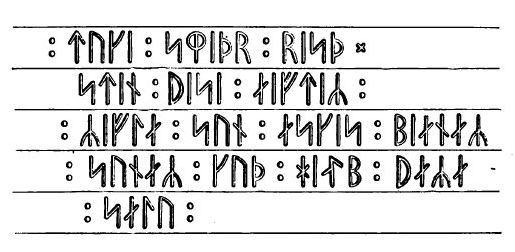
Auch George Stephens (*13.12.1813 - 09.08.1995, englischer Archäologe und Philologe)
 Bildquelle:
Minder fra min Virksomhed paa Arkæologiens
Omraade fra 1845 til 1908 von
Magnus Petersen (*04.09.1827 - 01.02.1917) auf der
Seite 265 - Lizenz:
Public Domain
Bildquelle:
Minder fra min Virksomhed paa Arkæologiens
Omraade fra 1845 til 1908 von
Magnus Petersen (*04.09.1827 - 01.02.1917) auf der
Seite 265 - Lizenz:
Public Domain
erwähnt in seinem Buch "The old-northern runic Monuments of Scandinavia and England, Vol. 1, 1866-67" auf S. 350 die Zeichnung Kruses und nutzt sie zur Wiedergabe der Runeninschrift:
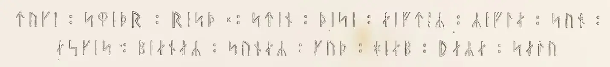
In dem dänischen Runenwerk von Prof. P. G. Thorsen (*07.08.1811 - 06.05.1883, Bibliothekar, Runenforscher und Historiker - link-LIVES - Artikel: Levnedsbeskrivelser af de ved Københavns Universitets Firehundredaarsfest promoverede Doktorer, Illustreret Tidende 1882, Nr. 1235 - vom 27.05.1833 / Grabstein in Varde / Eheschließung in Varde am 19. August 1848)
 Fotografie
zw. 1863-1900 von
Fotograf Budtz Müller (*26.12.1837 -
30.12.1884) -
Det Kgl. Biblioteks billedsamling - Lizenz:
Public Domain
Fotografie
zw. 1863-1900 von
Fotograf Budtz Müller (*26.12.1837 -
30.12.1884) -
Det Kgl. Biblioteks billedsamling - Lizenz:
Public Domain
mit dem Titel "De danske runemindesmærker beskrevne og forklarede, anden Afdeling, Jyllands Runemindesmærker, I. Afbildninger, 1879 - Nr. 56 - bringt der Autor diese Zeichnung von Prof. Julius Magnus Petersen (*04.09.1827 - 31.01.1917, Archäologischer Zeichner und Restaurator - link-LIVES - Bestattungsprotokoll)
 Bildquelle: Fotografie
von 1903 von Fotograf Marius Christensen
(*24.06.1874 -
25.06.1907) -
Det Kgl. Biblioteks billedsamling - Lizenz:
Public Domain
Bildquelle: Fotografie
von 1903 von Fotograf Marius Christensen
(*24.06.1874 -
25.06.1907) -
Det Kgl. Biblioteks billedsamling - Lizenz:
Public Domain
- Google Scan.
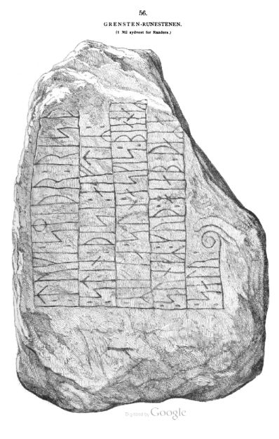
In seinem 1880 erschienenen II. Band bringt Thorsen seine Forschungen zu diesem Runenstein auf den Seiten 155-156 in Textform.
Prof. P. G. Thorsen Nachlass (Bezeichnet als: P. G. Thorsens optegnelser, tegninger m.m. vedrørende runer og runemindesmærker - überführt aus der Kopenhagener Universitätsbibliothek 1929 - Gemäß Ministerialschreiben vom 04.03.1929; früher benannt als Additamenta 612 kvart - findet sich in der Königlichen Bibliothek unter NKS 3296 (in mehreren einzelnen Pappschachteln). In der Pappschachtel Nr. 5 finden sich zu Grensten diese beiden Dokumente. Das eine sind seine Notizen von 1842 zu der Wiederentdeckung des Runensteins unter dem Fussboden des Waffenhauses - Okt. 1842. Die Zeichnung ist quasi eine Kopie der Zeichnung von Rasmus Henrik Kruse - siehe oben.


In der weiteren Pappschachtel mit der Nummer 17 findet sich diese tolle Zeichnung von Magnus Petersen die er auf den 08.10.1869 datiert hat.

Prof. Ludv. F. A. Wimmer (*07.02.1839 - 29.04.1920, Philologe und Runenforscher - link-LIVES - Politiets registerblade - Bestattungsprotokoll)
Bildquelle:
Fotografie zw. 1877-1900 von Fotograf Hansen & Weller
-
Det Kgl. Biblioteks billedsamling - Lizenz:
Public Domain
behandelt den Runenstein in seinem großformatigen Runenwerk "De danske runemindesmærker undersøgte og tolkede af Ludv. F. A. Wimmer, Andet Bind, Runestenene i Jylland og på øerne. 1899-1901 - Nr. 57, S. 264ff. Diese Zeichnung von Prof. Julius Magnus Petersen (*04.09.1827 - 31.01.1917, Archäologischer Zeichner und Restaurator - link-LIVES - Bestattungsprotokoll)
Bildquelle: Fotografie
von 1903 von Fotograf Marius Christensen
(*24.06.1874 -
25.06.1907) -
Det Kgl. Biblioteks billedsamling - Lizenz:
Public Domain
hat er darin aufgenommen - eigener Scan.
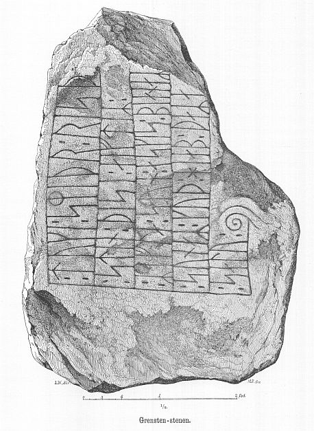
Ludv. F. A. Wimmer hat den Runenstein persönlich vor Ort am 23. August 1877 untersucht.
Er hat seine jahrelangen Aufzeichnungen der "Kgl. Bibliotek" in Kopenhagen überlassen. Ein Verzeichnis darüber wurde 1915 in Buchform herausgegeben - "Collectio runologica Wimmeriana: Fortegnelse over Ludv. F. A. Wimmers runologiske o. a. Samlinger i Det kgl. Bibliotek"
In seinen Unterlagen in der Königlichen Bibliothek befinden sich in "III - Originaltegninger af de danske Runemindesmærker, udførte paa Undersøgelsesrejserne af Magn. Petersen og kontrollerede paa Stedet af Ludv. Wimmer, samt Prøvetryk af de paa Grundlag af de nævnte Tegninger, Aftryk o. s. v. til De danske Runemindesmærker" udførte Afbildninger med Wimmers Rettelser" unter der Nummer 68 diese Zeichnung von Magnus Petersen (*04.09.1827 - 01.02.1917, Archäologischer Zeichner und Restaurator), die er auf den 23.08.1877 datiert hat.


Zwischen Montag, 26.09.2022, und Mittwoch, 28.09.2022, habe ich in der Königliche Bibliothek - Den sorte Diamant - in Kopenhagen diverse Unterlagen/Dokumente/Zeichnungen usw. nach Online-Vorbestellung zur Ansicht erhalten. Ich durfte mir Aufzeichnungen machen, sie aber auch uneingeschränkt fotografieren.
Diese sw Aufnahmen hat Erik Moltke (*04.04.1901 - 19.10.1984, Runologe, Historiker)
Bildquelle: Scan von Buchumschlag "Runerne i Danmark og ders
oprindelse" - Erik Moltke - 1976 - Lizenz:
CC-BY-SA
am 06.07.1930 aufgenommen - rechte Aufnahme Runenzeichen nachgezeichnet.
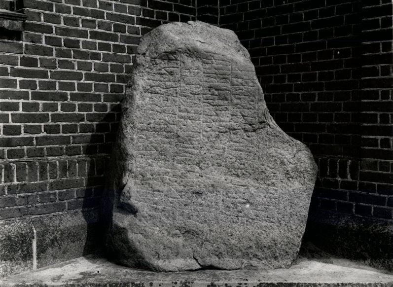
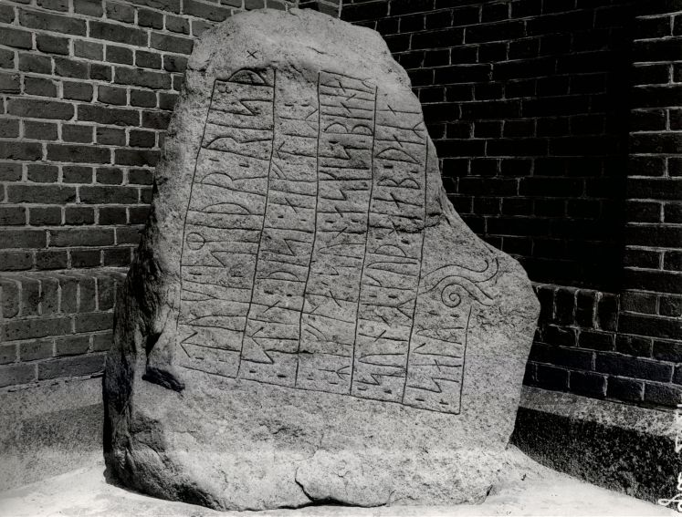
Quelle: Digitale Sammlung des Nationalmuseums Kopenhagen entnommen - Lizenz: CC-BY-SA
Dieses Foto hat ein Johs. Hertz am 12.02.1982 gefertigt.
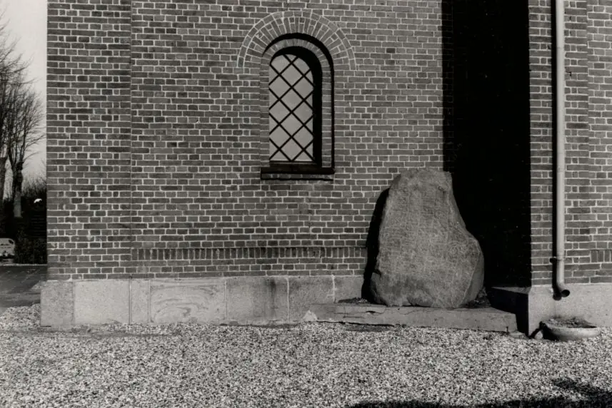
Quelle: Digitale Sammlung des Nationalmuseums Kopenhagen entnommen - Lizenz: CC-BY-SA
Im Vorfeld zu dem 2016 erschienenen Buch von Lisbeth M. Imer (*1973, Runologin am Nationalmuseum Kopenhagen) "Danmarks Runesten - en fortælling" reiste sie mit dem Fotografen Roberto Fortuna zur Bestandsaufnahme durch die Lande. Dieser hat den Runenstein mit Schräglicht bei Dunkelheit aufgenommen und darüber wirklich herausragende Fotos erzielt. Diese Fotografien stammen vom 22.03.2012.
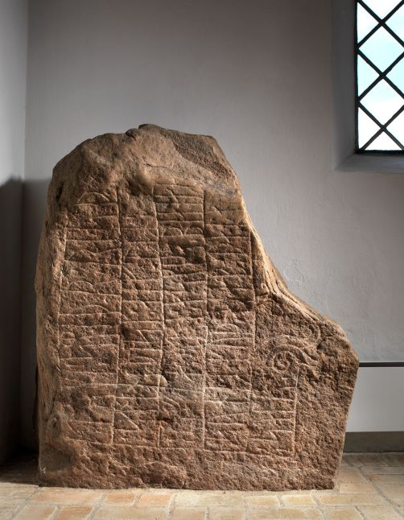
Quelle: Digitale Sammlungen des Nationalmuseum Kopenhagen - Lizenz: CC-BY-SA
Den Eintrag zu diesem Runenstein aus der dänischen Runen Datenbank im Internet kann man hier abrufen.
Die Informationen in "Fund og Fortidsminder" zu dem Runenstein finden sich hier. Darin ist inzwischen dieser Zustandsbericht des Steinrestaurators Leif Vognsen aus dem Jahr 2018 eingebettet.
Über diesen Link finden sich zu dem Runenstein Informationen des Forschungsprojektes "Runes" der Akademie der Wissenschaften zu Göttingen.
Im Rahmen meiner 2022er Jütland Wikinger Tour war ich am Samstag, 04.06.2022, an der Grensten Kirche und traf sie unverschlossen an.
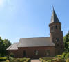 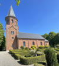 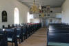 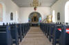 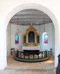 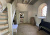 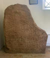 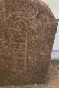 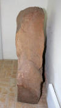 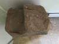


Bei meinem Besuch der Kirche am Donnerstag, 25.08.2016, fand ich die Kirche ebenfalls geöffnet vor (der Graver war vor Ort) und konnte diese Fotos aufnehmen.
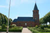 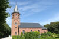 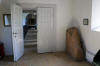 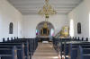 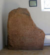 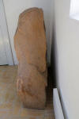 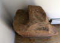 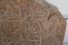


Zuvor war ich erstmals am Mittwoch, 29.08.1990, vor Ort und habe das Foto - linker Frame - aufgenommen. Damals war die Runeninschrift mit weißer Kreide nachgezeichnet gewesen.